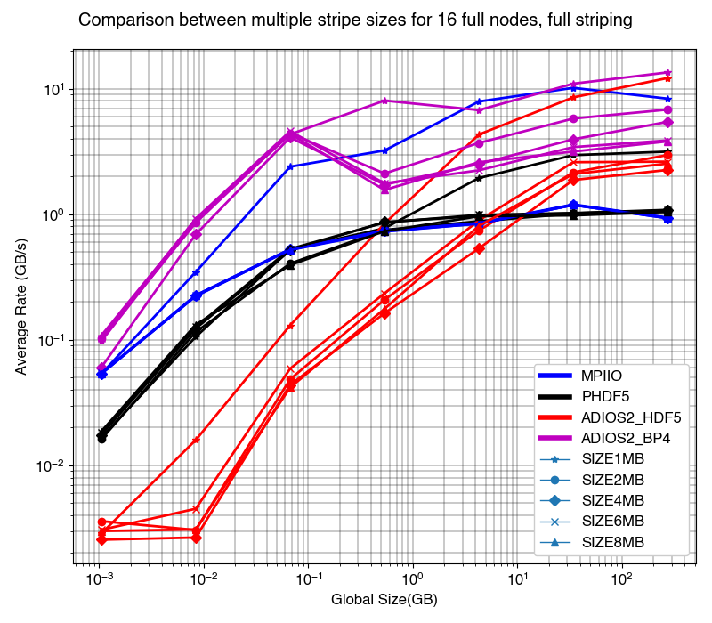

QRM March22
Contents
2. QRM March22#
2.1. Stripe size comparison rank 2048#
Shows lower stripe sizes perform better I/O.
{kind=link}
2.2. Stripe count comparisons rank 2048#
Comparison between stripe counts, and default stripe size. Shows more stripe counts gives better performance. Interesting, ADIOS2 performance doesnt vary significantly with changing stripe counts.
2.3. IO rates between NVMe File mounting and ARCHER2#
Comparison between mount dir and archer2 file system. Shows that the mount dir is slightly better but can be improved.
2.4. Discussion of results#
The results obtained from the benchmarking show that the write rates obtained by using ADIOS2 BP4 I/O engine were higher than when using MPIIO, HDF5 and ADIOS2 HDF5 I/O engine. Using 2048 MPI ranks (16 full nodes), full stripe count (8) and default stripe size (1 MiB) ADIOS2 BP4 IO engine achieved a 4x improvement in IO write rates as compared to the HDF5 IO library. The peak writing rate in this configuration achieving using ADIOS2 BP4 was 13.3GB/s and by using HDF5 was 3.23GB/s. Additionally it was found that the write rates increased as the stripe counts increase and decreased as the stripe sizes increased. One of the reasons for these findings is ADIOS2 BP4 engine writes a lot of small files which do not need to be contiguous. It saves time by partially rearranging data and reducing contention in the file system \cite{noauthor_pio2_2019} which makes it faster than the other IO layers.
stripe counts
By varying stripe counts in sequence 1,2,4,8 (with 8 being the max stripe count), it was found that the IO write rates increased as the stripe counts increased. However, in the case of ADIOS2 BP4 IO engine, the write rates did not change as significantly as the other IO layers with changing stripe counts.
stripe sizes
By varying stripe sizes in sequence 1MiB, 2MiB, 4MiB, 8MiB, 1000MiB, 2000MiB and 4000MiB (1MiB being the smallest possible, 4000MiB being the largest possible) it was observed that the IO write rates decreased as the stripe sizes increased. This is explained by the relatively higher bandwidth of IO required by this application with larger array sizes.
Burst buffer
The Burst buffer file system of ARCHER2 was also benchmarked using this program. It was found that the IO rates achieved using this file system were higher than using the work directory of ARCHER2.
WHY?
need to find out the exact method of burst buffers operation in ARCHER2. Is that bandwidth sharing when overrun in main folder or completely standalone system.
Methodology:
The benchmarking program was run on the work directory of the ARCHER2 system. The jobs were submitted using SLURM with a job script to specify the stripe counts, stripe sizes, number of nodes and tasks per node. The results of these jobs were then averaged from 3 runs using a python script which was then used to visualise the results.
modules used
Compilers used are the following;
\item PrgEnv-gnu/8.0.0
\item gcc/10.2.0
\item cray-mpich/8.1.4
\item cmake/3.21.3
Modules/libraries used are the following;
\item craype/2.7.6
\item libfabric/1.11.0.4.71
\item perftools-base/21.02.0
\item bolt/0.7
\item load-epcc-module
\item cray-hdf5-parallel/1.12.0.3
\item craype-x86-rome
\item craype-network-ofi
\item xpmem/2.2.40-7.0.1.0\_2.7\_\_g1d7a24d.shasta
\item cray-libsci/21.04.1.1
\item epcc-setup-env